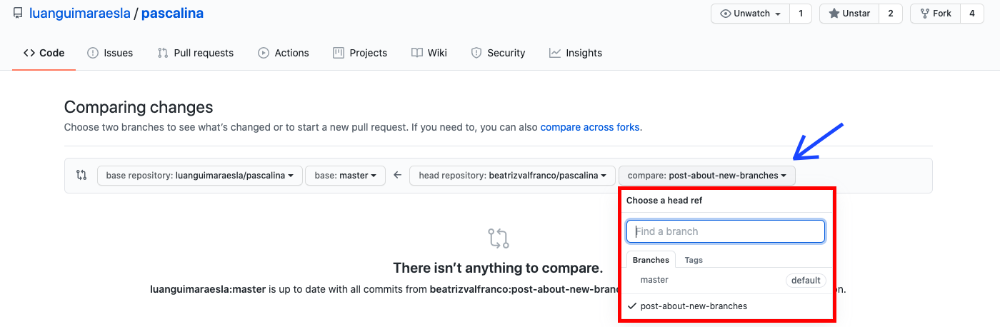

4 minutes
O que são branches e como elas funcionam
Branches: navegando entre diferentes ramos de trabalho
Que bom te ver por aqui! Até este momento aprendemos sobre como contribuir para projetos abertos utilizando o git por meio da branch master. Ok, mas o que é branch master? Explicamos.
Branch significa ramo de trabalho e a branch master é o ramo principal. No post Como contribuir com projetos abertos aprendemos a fazer um fork de um projeto para o nosso repositório do GitHub e depois a cloná-lo (do repositório) para um diretório local da nossa máquina. Uma vez clonado o projeto, podemos incluir alterações sem interferir no código original (aquele que está no repositório em que fizemos o fork).
Em um primeiro contato com o git, nossas primeiras contribuições foram feitas no ramo principal, na branch master do repositório local. No entanto, quando trabalhamos em um projeto, geralmente atuamos em diferentes partes. Submeter um pull request com alterações diversas não é recomendado. Além disso, nosso ramo principal de trabalho precisa se manter coerente e estável. Por isso, chegou a hora de aprender a usar outras branches além da master.
Pode soar complexo, mas a verdade é que fazer operações em branches separadas nos ajuda a melhor organizar o fluxo de trabalho. Para cada alteração desejada é recomendado criar uma nova branch.
A título de exemplo, vamos supor que queremos criar um novo post no site do Pascalina sobre um tema qualquer, qual seja, “como usar o GitHub”. Vamos fazer isso pasito a pasito logo abaixo:
- No seu terminal, certifique-se de que você está no diretório do seu projeto usando o comando
pwd.
Para verificar quantos ramos de trabalho existem e em qual você está basta digitar:
git branch -a
Se você ainda não criou nenhuma branch, você só terá a branch master, como mostrado abaixo:

- Para criar uma nova branch, digite:
git branch nome_da_branch
O ideal é que você nomeie a branch de forma que remeta à ação que está sendo realizada. Considerando o exemplo proposto aqui do nosso novo post sobre “como usar o GitHub”, poderíamos nomear a branch de tutorial_github.
Para listar as branches disponíveis, utilizaremos mais uma vez o comando git branch -a. Aqui o “-a” significa “all”. O que você está dizendo então é: git me mostre todas as branches disponíveis.
Além de visualizar todas as branches, o terminal indica a branch na qual você se encontra sinalizando-a em verde e com um asterisco ao lado, como no print abaixo:

Apesar de criar uma nova branch, como você pode ver, ainda estamos na branch master. Para entrar na nova branch:
git checkout nome_da_branch
Quando criamos uma branch, o que acontece é que uma cópia do projeto é criada nesse novo ramo de trabalho, levando em consideração o último commit feito na branch anterior (onde você estava quando usou o comando git branch nome_da_branch). Suas alterações subsequentes ficarão armazenadas somente na branch em que você está trabalhando.

No caso da imagem acima, trocamos para o ramo new_branch onde iremos então escrever o novo post.
- Tendo finalizado o trabalho, você deve subir a branch recém-criada para o seu repositório remoto no GitHub, apelidado convencionalmente de origin:
git push origin nome_da_branch
O que você está dizendo aqui é: git empurre nome_da_branch que está no meu repositório local para o meu repositório remoto (no GitHub). Essa é a sintaxe padrão: git + ação que você quer fazer + o lugar de destino + o objeto que você quer enviar.

- Agora suas atualizações estão no seu repositório, mas você ainda precisa submetê-las para a autora do repositório original. Isso é feito na própria interface do GitHub, por meio do pull request. No post Como contribuir com projetos abertos ensinamos como fazer isso. A diferença aqui é que ao invés de submeter um pedido de request da sua master para a master do projeto original, vamos submeter um pedido da sua branch para a master do repositório “dono” do projeto.

- Não esqueça de enviar uma mensagem explicando suas contribuições para a proprietária do projeto. Se ela esiver satisfeita será feito um merge das suas constribuições na branch master do repositório original.

Para terminar, vamos revisar algumas cositas más:
-
As branches servem para dinamizar e flexibilizar o fluxo de trabalho uma vez que a branch principal requer estabilidade e coerência. A estrutura de trabalho por meio de branches também permite que diferentes recursos sejam criados por múltiplos colaboradores ao mesmo tempo sem comprometer a master.
-
Ao nomear uma branch, seja o mais descritiva possível para que outras colaboradoras acompanhem o que está sendo feito de forma rápida e prática.
-
Para incorporar as branches na branch master, abra pull requests, sempre um para cada branch.
-
O GitHub fornece guias aqui e tutoriais interativos sobre git aqui.
-
Não se preocupe em memorizar todos os comandos utilizados no terminal. Quando tiver dúvidas, você pode pedir ajuda no próprio terminal utilizando a sintaxe: git + ação que deseja realizar + –help, por exemplo:
git branch --help